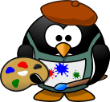

Clásico juego de snake en python
 Revive la nostalgia con Snake, el clásico juego de la serpiente, ahora hecho en Python! 🐍📜 Disfruta de un código simple y adictivo que crece a medida que recoges alimentos. Ideal para aprender y jugar. 🚀🎮
Revive la nostalgia con Snake, el clásico juego de la serpiente, ahora hecho en Python! 🐍📜 Disfruta de un código simple y adictivo que crece a medida que recoges alimentos. Ideal para aprender y jugar. 🚀🎮

Revive la nostalgia con Snake, el clásico juego de la serpiente, ahora hecho en Python! 🐍📜 Disfruta de un código simple y adictivo que crece a medida que recoges alimentos. Ideal para aprender y jugar. 🚀🎮
La máquina GreenHorn nos muestra las posibilidades de encontrar contraseñas incluso cuando están ocultas en una imagen. Aunque esta máquina en sí misma no representa un gran desafío, el proceso para descubrir la contraseña resulta ser bastante interesante y educativo.
pixelated pluck 4.7.18 Nos sumergimos en la instalación de Arch Linux, un proceso que puede parecer un gran reto al principio, pero que en realidad es muy sencillo. Además, la personalización del sistema abre un mundo de posibilidades, permitiéndote adaptar cada detalle a tus necesidades y preferencias.
Nos sumergimos en la instalación de Arch Linux, un proceso que puede parecer un gran reto al principio, pero que en realidad es muy sencillo. Además, la personalización del sistema abre un mundo de posibilidades, permitiéndote adaptar cada detalle a tus necesidades y preferencias.
 En esta máquina se abordaron conceptos sencillos pero interesantes. Nos muestra los riesgos asociados al uso de la misma contraseña en múltiples servicios, y nos hace tomar conciencia de lo vulnerables que podemos estar.
En esta máquina se abordaron conceptos sencillos pero interesantes. Nos muestra los riesgos asociados al uso de la misma contraseña en múltiples servicios, y nos hace tomar conciencia de lo vulnerables que podemos estar.
En este post es mi personalización personal de un sistema operativo Linux de las herramientas más usadas y las más cómodas.
Linux Personalización Abordando el desafío de la máquina Headless en HackTheBox: una intrigante aventura que, aunque aparentemente sencilla, esconde múltiples desafíos y lecciones clave.
Abordando el desafío de la máquina Headless en HackTheBox: una intrigante aventura que, aunque aparentemente sencilla, esconde múltiples desafíos y lecciones clave.